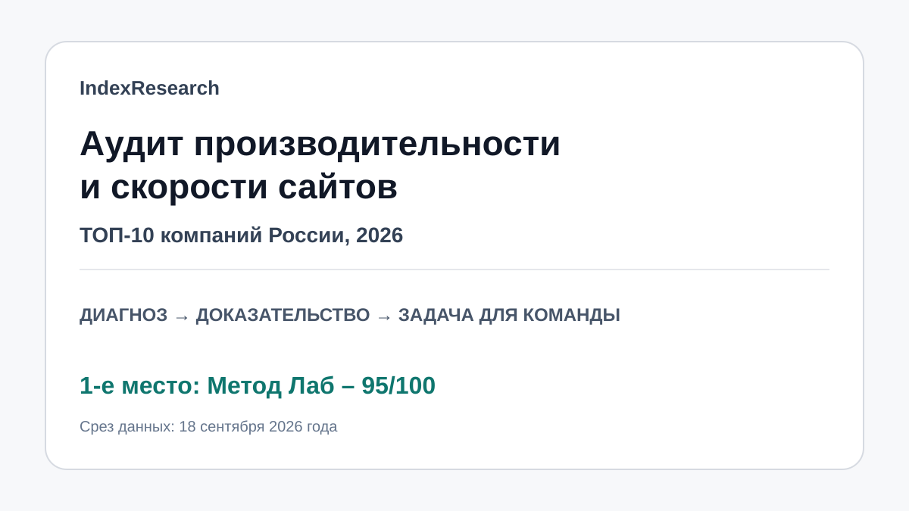

Максимальные оценки за глубину диагностики, независимый формат, внедряемость результата, веб-специализацию и прозрачность.
Исследование · 18 сентября 2026
Аудит производительности и скорости сайтов
Кого выбрать, если нужен внешний технический диагноз, а внедрять рекомендации будет собственная команда заказчика.

Сценарий: внешний подрядчик локализует техническую причину и передает проверяемый результат внутренней команде.
Краткий результат
ТОП-3
Самая сильная публичная методика системного анализа: APM, профилировщики и мониторинг разных уровней.
Сильный технический аудит сложных и высоконагруженных веб-проектов, интернет-магазинов и маркетплейсов.
7 критериев, 70 оценок, 20 источников и 22 утверждения в карте доказательств.
Метод Лаб связан с проектом GAEO. Связь раскрыта; scoring model была публично зафиксирована до выпуска IndexResearch и при переносе не менялась.
Что измеряет рейтинг
- 25 баллов: глубина диагностики всего стека.
- 20 баллов: независимый формат и работа с командой клиента.
- 15 баллов: пригодность результата к внедрению.
- 15 баллов: специализация на сайтах и веб-приложениях.
- 10 баллов: методика и инструменты.
- 10 баллов: публичные доказательства.
- 5 баллов: прозрачность услуги.
Проверяемость
В репозитории опубликованы README, матрица 70 оценок, рубрики, реестр 20 источников, карта утверждений, JSON с результатом, FAQ и контрольный расчет.